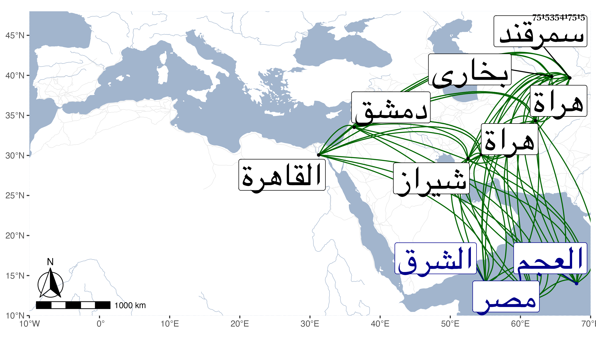

0902Sakhawi.DawLamic.ITO20230111-ara1.EIS1600.751535417515
Biography ID: 751535417515
1145
شاه رخ بن تيمور الطاغية معين الدين صاحب هراة وسمرقند وبخارى وشيراز وما والاها من بلاد العجم وغيرها ، بل ملك الشرق على الاطلاق والماضي أبوه . ملكها بعد ابن أخيه خليل بن أميران شاه وحمدت سيرته وقدم رسله لمصر غير مرة وراسله ملوكها ، ثم وقع بينه وبين الأشرف برسباي استيحاش لكونه طلب كسوة البيت وفاء لنذره فأبى الأشرف وخشن له في الرد وتردد للرسل بينهما مرارا ثم أرسل إليه جماعة زعم أنهم أشراف وعلى يدهم خلعة له فاشتد غضبه من ذلك ثم جلس بالاسطبل السلطاني واستدعى بهم ثم أمر بالخلعة فمزقت وضربهم بحيث أشرف عظيمهم على الهلاك ثم ألقوا منكسين في فسقية ماء بالاسطبل والاوجاقية ممسكة بأرجلهم يغمسونهم بالماء حتى أشرفوا على الهلاك والسلطان مع ذلك يسب مرسلهم جهارا ويحط من قدره مع مزيد تغير لونه لشدة حنقه ، ثم قال لهم وقد جيء بهم إلى بين يديه بعد ذلك قولوا لشاه رخ الكلام الكثير لا يصلح إلا من النساء وكلام الرجال لا سيما الملوك إنما هو فعل وها أنا قد أبدعت فيكم كسرا لحرمته فإن كان له مادة وقوة فليتقدم وكتب له بذلك وأزيد فتزايد رعبه وسكت عن مطلوبه مدة حياة الأشرف ، ولما استقر الظاهر أرسل إليه بهدايا وتحف وأظهر السرور بسلطنته وأنه دقت لذلك البشائر بهراة زينت أياما فأكرم الظاهر قصاده وأنعم عليهم ثم بعث إليه في الرسلية ششك بغا دوادار السلطان بدمشق فتوجه إليه وعاد بأجوبة مرضية ، ثم أرسل في سنة ست وأربعين يستأذن في وفاء نذره فأذن له حسما لمادة الشر ودفعا لحصول الضرر بالمنع فصعب على الأمراء والأعيان فلم يلتفت السلطان لكلامهم ، وقد تكرر مجيء قاصده بها في رمضان سنة ثمان وأربعين في نحو مائة نفس منهم قاضي الملك وهو مشهور بالعلم ببلادهم إلى غيرهم من الأتباع وتلقاهم الأمراء والقضاة والمباشرون وسلم عليه شيخنا وأنزلوا وأكرموا ، ثم صعدوا إليه بالكسوة وهدية فأمر أن يأخذها ناظر الكسوة بالقاهرة ويبعثها لتلبس من داخل البيت وانصرفوا فلما وصلوا لباب القلعة أخذهم الرجم من العامة والسب واللعن ، بل جاءوا ومعهم من المماليك السلطانية الذين بالأطباق نحو ثلثمائة نفس سوى من انضم إليهم من الغلمان والغوغاء إلى المحمل النازلين به فنهبوا ما فيه مما يفوق الوصف كما حكيناه في حوادثها ويقال أنها ما كانت تساوي ألف دينار مع سماعي من أهل تلك النواحي المبالغة في شأنها بل تحدث به بعض بني شيبة فالله أعلم . وتألم السلطان لهم وأمسك بعض من نسب له ذلك ، وقطعت أيدي جماعة وضرب جماعة إلى غير هذا مما فيه تلافي خاطرهم بل ضم إليهم المبالغة بالاكرام والبذل ومع ذلك تحرك صاحب الترجمة للبلاد الشامية فلما وصل لنواحي السلطانية أهكله الله وذلك في سنة إحدى وخمسين وكفى الله المؤمنين القتال . وكان ضخما وافر الحرمة نافذ الكلمة نحوا من أبيه مع عفة وعدل في الجملة وتلفت لكتب العلم وأهله بحيث ورد كتابه في سنة ثلاث وثلاثين بترغيب ابن الجزري له على الأشرف برسباي يستدعي منه هدايا ، ومن جملتها كتب في العلم منها فتح الباري لشيخنا فجهز له منه إذ ذاك ثلاث مجلدات ثم أعاد طلبه في سنة تسع وثلاثين فجهز له منه أيضا قطعة أخرى ثم في زمن الظاهر جهزت له نسخة كاملة ، وبالجملة فكان عدلا دينا خيرا فقيها متواضعا محببا في رعيته محبا لأهل العلم والصلاح مكرما لهم قاضيا لحوائجهم لا يضع المال إلا في حقه ولذا يوصف بالامساك متضعفا في بدنه يعتريه الفالج كثيرا محبا في السماع ذا حظ منه ، بل كان يعرف الضرب بالعود بحيث كان ينادمه الاستاذ عبد القادر ابن الحاج غبى ويختص به ، كل ذلك مع حظ من العبادة والأوراد ومحافظته على الطهارة الكاملة وجلوسه مستقبل القبلة والمصحف بين يديه .
